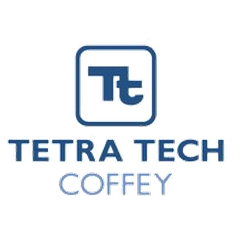

Payroll done with precision
Accurate, compliant, on time.
We design, run and optimise payroll for Australian organisations with bilingual support and audit-ready processes.
Accuracy
Robust checks and reconciliations.
Compliance
Fair Work, STP & Super ready.
Continuity
Senior consultants, accountable delivery.
Latest Industry News
Page 1 of 4
Partners
Partners


Ready to talk?
Email admin@signaturepayroll.com.au or send us a message.